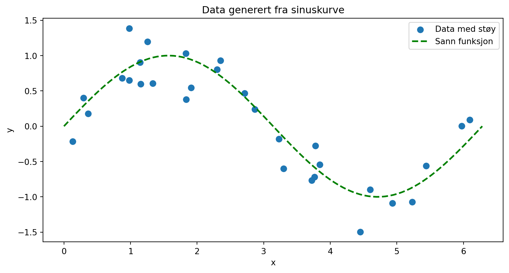
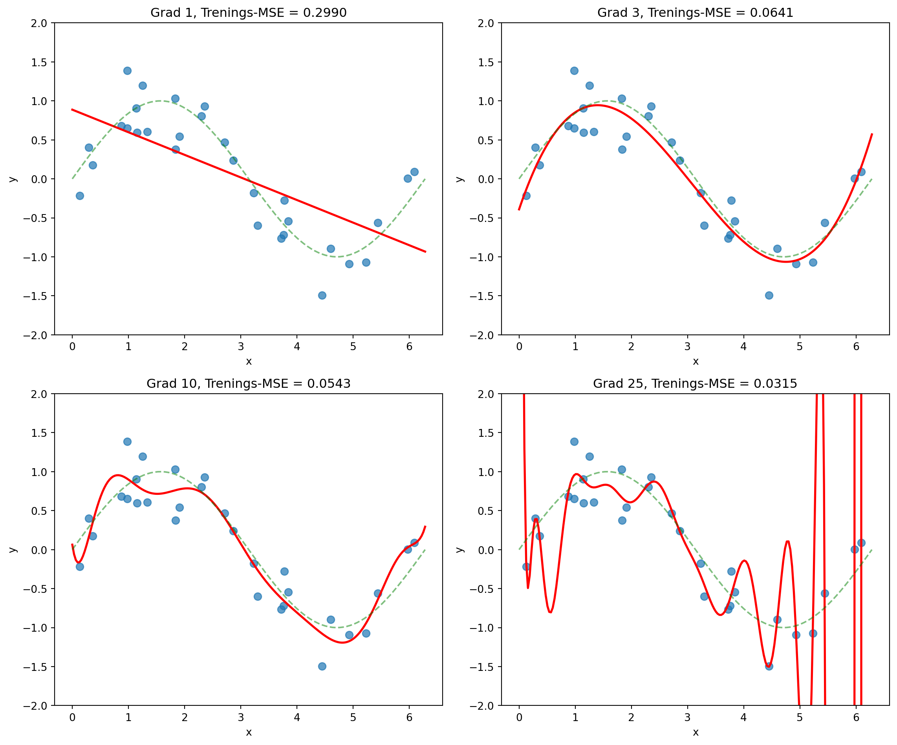
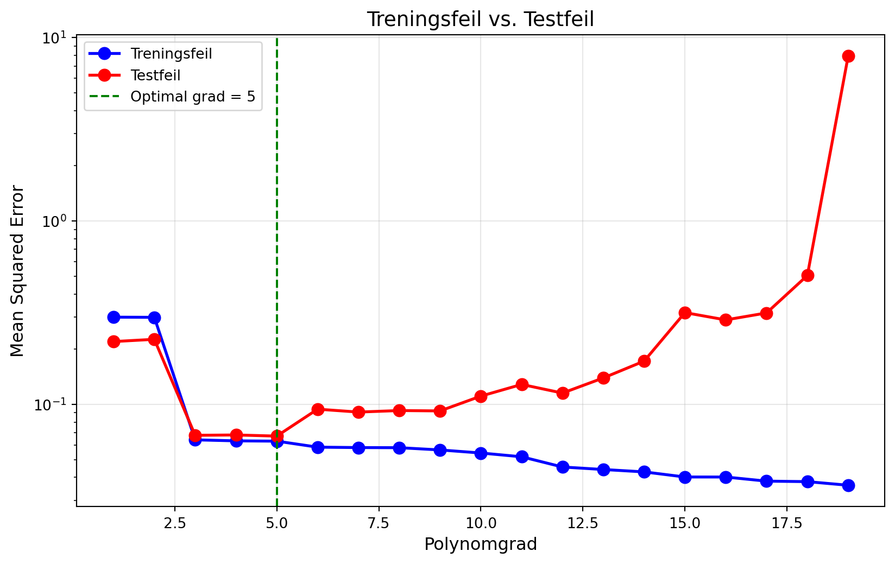
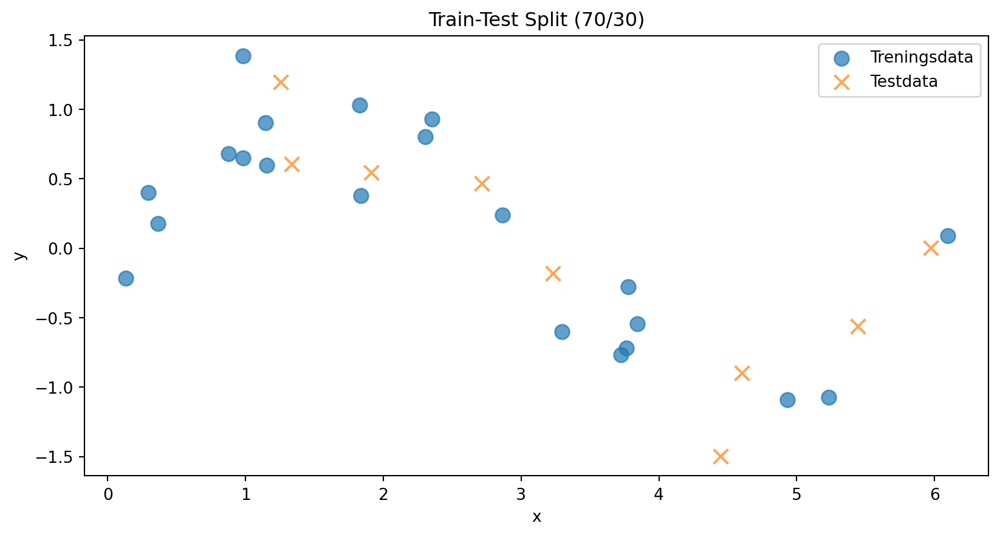
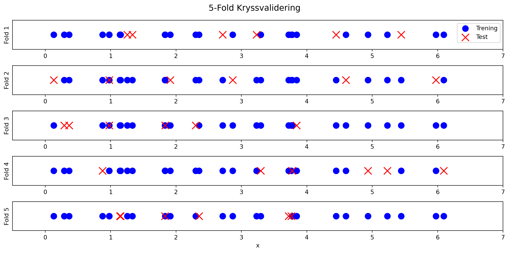
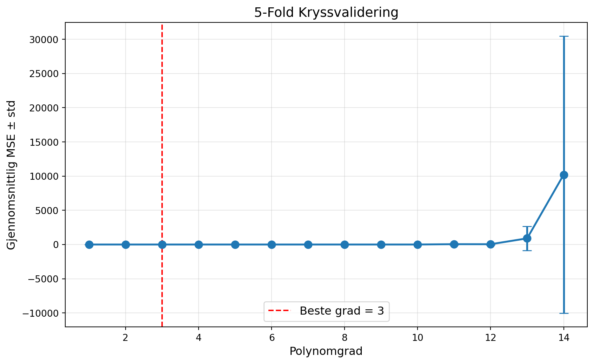
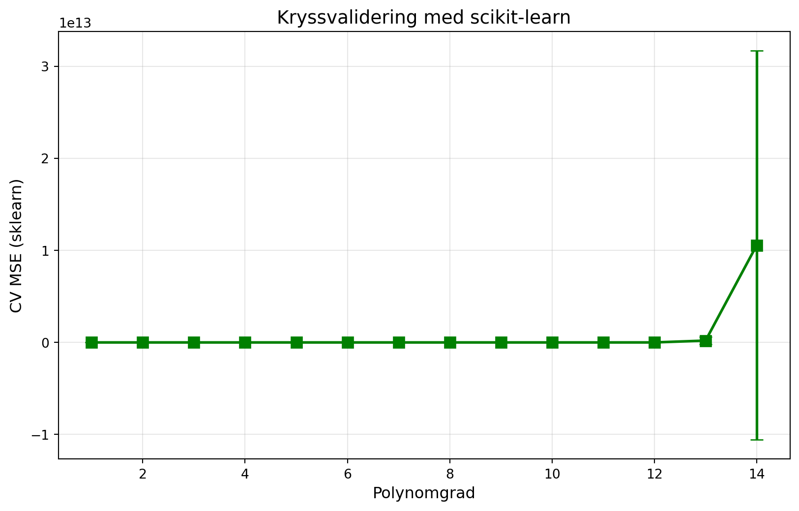
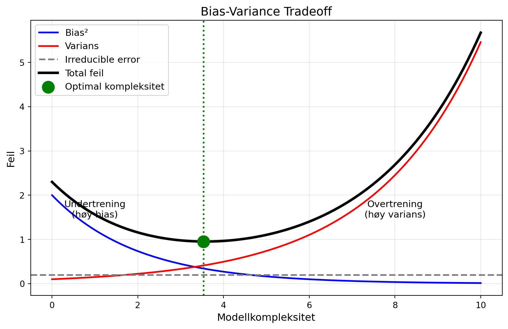
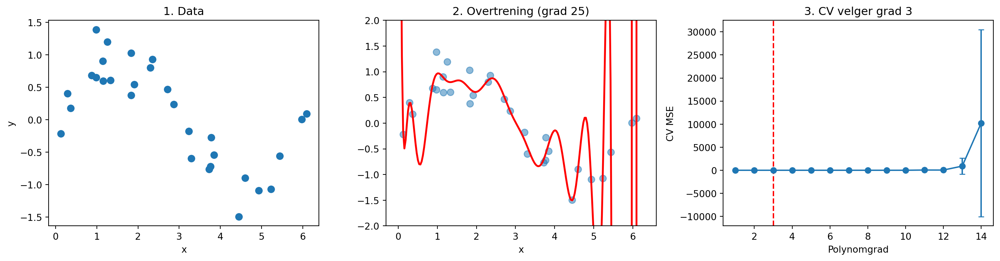

import numpy as np
import matplotlib.pyplot as plt
from sklearn.model_selection import train_test_split, KFold, cross_val_score
from sklearn.preprocessing import PolynomialFeatures
from sklearn.linear_model import LinearRegression
from sklearn.pipeline import make_pipeline
np.random.seed(42)Kryssvalidering - Videokode
Kode til videoforelesning om kryssvalidering
Denne filen inneholder koden som brukes i videoforelesningen om kryssvalidering.
Setup
Del 2: Generere data
# Generere data fra sinuskurve med støy
n = 30
x = np.sort(np.random.uniform(0, 2*np.pi, n))
y_true = np.sin(x)
y = y_true + np.random.normal(0, 0.3, n)
plt.figure(figsize=(10, 5))
plt.scatter(x, y, s=50, label='Data med støy')
plt.plot(np.linspace(0, 2*np.pi, 100), np.sin(np.linspace(0, 2*np.pi, 100)),
'g--', linewidth=2, label='Sann funksjon')
plt.xlabel('x')
plt.ylabel('y')
plt.title('Data generert fra sinuskurve')
plt.legend()
plt.show()
Del 2: Polynomtilpasning
# Tilpasse polynomer av ulik grad
x_plot = np.linspace(0, 2*np.pi, 200)
fig, axes = plt.subplots(2, 2, figsize=(12, 10))
grader = [1, 3, 10, 25]
for i, grad in enumerate(grader):
ax = axes[i//2, i%2]
koeff = np.polyfit(x, y, grad)
y_pred = np.polyval(koeff, x_plot)
mse = np.mean((y - np.polyval(koeff, x))**2)
ax.scatter(x, y, s=50, alpha=0.7)
ax.plot(x_plot, y_pred, 'r-', linewidth=2)
ax.plot(np.linspace(0, 2*np.pi, 100), np.sin(np.linspace(0, 2*np.pi, 100)),
'g--', alpha=0.5)
ax.set_title(f'Grad {grad}, Trenings-MSE = {mse:.4f}')
ax.set_ylim(-2, 2)
ax.set_xlabel('x')
ax.set_ylabel('y')
plt.tight_layout()
plt.show()
Del 3: Treningsfeil vs. Testfeil
# Generere testdata
x_test = np.sort(np.random.uniform(0, 2*np.pi, 30))
y_test = np.sin(x_test) + np.random.normal(0, 0.3, 30)
# Beregn trenings- og testfeil for ulike grader
grader = range(1, 20)
treningsfeil = []
testfeil = []
for grad in grader:
koeff = np.polyfit(x, y, grad)
# Treningsfeil
y_pred_train = np.polyval(koeff, x)
treningsfeil.append(np.mean((y - y_pred_train)**2))
# Testfeil
y_pred_test = np.polyval(koeff, x_test)
testfeil.append(np.mean((y_test - y_pred_test)**2))
plt.figure(figsize=(10, 6))
plt.plot(grader, treningsfeil, 'b-o', linewidth=2, markersize=8, label='Treningsfeil')
plt.plot(grader, testfeil, 'r-o', linewidth=2, markersize=8, label='Testfeil')
plt.xlabel('Polynomgrad', fontsize=12)
plt.ylabel('Mean Squared Error', fontsize=12)
plt.title('Treningsfeil vs. Testfeil', fontsize=14)
plt.legend(fontsize=12)
plt.yscale('log')
plt.grid(True, alpha=0.3)
plt.axvline(grader[np.argmin(testfeil)], color='green', linestyle='--',
label=f'Optimal grad = {grader[np.argmin(testfeil)]}')
plt.legend()
plt.show()
print(f"Optimal polynomgrad (lavest testfeil): {grader[np.argmin(testfeil)]}")
Optimal polynomgrad (lavest testfeil): 5Del 4: Train-Test Split
# Train-test split med sklearn
X = x.reshape(-1, 1)
X_train, X_test, y_train, y_test = train_test_split(
X, y, test_size=0.3, random_state=42
)
plt.figure(figsize=(10, 5))
plt.scatter(X_train, y_train, s=80, label='Treningsdata', alpha=0.7)
plt.scatter(X_test, y_test, s=80, marker='x', label='Testdata', alpha=0.7)
plt.xlabel('x')
plt.ylabel('y')
plt.title('Train-Test Split (70/30)')
plt.legend()
plt.show()
print(f"Treningssett: {len(X_train)} punkter")
print(f"Testsett: {len(X_test)} punkter")
Treningssett: 21 punkter
Testsett: 9 punkter# Demonstrere variasjon med ulike random_state
for rs in [0, 1, 2, 42, 123]:
X_tr, X_te, y_tr, y_te = train_test_split(X, y, test_size=0.3, random_state=rs)
beste_grad = 1
beste_feil = float('inf')
for grad in range(1, 10):
koeff = np.polyfit(X_tr.flatten(), y_tr, grad)
y_pred = np.polyval(koeff, X_te.flatten())
feil = np.mean((y_te - y_pred)**2)
if feil < beste_feil:
beste_feil = feil
beste_grad = grad
print(f"random_state={rs}: Beste polynomgrad = {beste_grad}")random_state=0: Beste polynomgrad = 3
random_state=1: Beste polynomgrad = 4
random_state=2: Beste polynomgrad = 3
random_state=42: Beste polynomgrad = 6
random_state=123: Beste polynomgrad = 3Del 5: K-Fold Kryssvalidering
# Visualisere K-fold oppdeling
K = 5
kf = KFold(n_splits=K, shuffle=True, random_state=42)
fig, axes = plt.subplots(K, 1, figsize=(12, 6))
for i, (train_idx, test_idx) in enumerate(kf.split(X)):
ax = axes[i]
ax.scatter(X[train_idx], [0.5]*len(train_idx), c='blue', s=100, label='Trening')
ax.scatter(X[test_idx], [0.5]*len(test_idx), c='red', s=150, marker='x', label='Test')
ax.set_yticks([])
ax.set_ylabel(f'Fold {i+1}')
ax.set_xlim(-0.5, 7)
if i == 0:
ax.legend(loc='upper right')
plt.xlabel('x')
plt.suptitle('5-Fold Kryssvalidering', fontsize=14)
plt.tight_layout()
plt.show()
# Implementere k-fold kryssvalidering fra scratch
def kfold_kryssvalidering(X, y, grader, K=5):
"""
Utfør K-fold kryssvalidering for polynomregresjon.
"""
kf = KFold(n_splits=K, shuffle=True, random_state=42)
resultater = {grad: [] for grad in grader}
for train_idx, test_idx in kf.split(X):
X_train, X_test = X[train_idx], X[test_idx]
y_train, y_test = y[train_idx], y[test_idx]
for grad in grader:
koeff = np.polyfit(X_train.flatten(), y_train, grad)
y_pred = np.polyval(koeff, X_test.flatten())
mse = np.mean((y_test - y_pred)**2)
resultater[grad].append(mse)
return resultater
# Kjør kryssvalidering
grader = range(1, 15)
cv_resultater = kfold_kryssvalidering(X, y, grader)
# Beregn gjennomsnitt og standardavvik
gjennomsnitt = [np.mean(cv_resultater[g]) for g in grader]
std = [np.std(cv_resultater[g]) for g in grader]
# Plott
plt.figure(figsize=(10, 6))
plt.errorbar(grader, gjennomsnitt, yerr=std, fmt='o-', capsize=5,
linewidth=2, markersize=8)
plt.xlabel('Polynomgrad', fontsize=12)
plt.ylabel('Gjennomsnittlig MSE ± std', fontsize=12)
plt.title('5-Fold Kryssvalidering', fontsize=14)
plt.grid(True, alpha=0.3)
beste_grad = grader[np.argmin(gjennomsnitt)]
plt.axvline(beste_grad, color='red', linestyle='--',
label=f'Beste grad = {beste_grad}')
plt.legend(fontsize=12)
plt.show()
print(f"Beste polynomgrad: {beste_grad}")
print(f"CV-feil: {gjennomsnitt[beste_grad-1]:.4f} ± {std[beste_grad-1]:.4f}")
Beste polynomgrad: 3
CV-feil: 0.0764 ± 0.0372Del 6: Scikit-learn cross_val_score
# Bruke scikit-learn sin cross_val_score
def lag_modell(grad):
return make_pipeline(
PolynomialFeatures(degree=grad),
LinearRegression()
)
# Kryssvalidering med sklearn
cv_scores_sklearn = []
cv_stds_sklearn = []
for grad in grader:
modell = lag_modell(grad)
scores = cross_val_score(modell, X, y, cv=5, scoring='neg_mean_squared_error')
cv_scores_sklearn.append(-scores.mean())
cv_stds_sklearn.append(scores.std())
plt.figure(figsize=(10, 6))
plt.errorbar(grader, cv_scores_sklearn, yerr=cv_stds_sklearn, fmt='s-',
capsize=5, linewidth=2, markersize=8, color='green')
plt.xlabel('Polynomgrad', fontsize=12)
plt.ylabel('CV MSE (sklearn)', fontsize=12)
plt.title('Kryssvalidering med scikit-learn', fontsize=14)
plt.grid(True, alpha=0.3)
plt.show()
Del 7: Bias-Variance Tradeoff
# Illustrasjon av bias-variance tradeoff
kompleksitet = np.linspace(0, 10, 100)
# Simulerte kurver
bias_sq = 2 * np.exp(-0.5 * kompleksitet)
varians = 0.1 * np.exp(0.4 * kompleksitet)
irreducible = 0.2
total_feil = bias_sq + varians + irreducible
plt.figure(figsize=(10, 6))
plt.plot(kompleksitet, bias_sq, 'b-', linewidth=2, label='Bias²')
plt.plot(kompleksitet, varians, 'r-', linewidth=2, label='Varians')
plt.axhline(irreducible, color='gray', linestyle='--', linewidth=2,
label='Irreducible error')
plt.plot(kompleksitet, total_feil, 'k-', linewidth=3, label='Total feil')
# Marker optimum
optimal_idx = np.argmin(total_feil)
plt.axvline(kompleksitet[optimal_idx], color='green', linestyle=':', linewidth=2)
plt.scatter([kompleksitet[optimal_idx]], [total_feil[optimal_idx]],
color='green', s=200, zorder=5, label='Optimal kompleksitet')
plt.xlabel('Modellkompleksitet', fontsize=12)
plt.ylabel('Feil', fontsize=12)
plt.title('Bias-Variance Tradeoff', fontsize=14)
plt.legend(fontsize=11)
plt.grid(True, alpha=0.3)
# Annotasjoner
plt.annotate('Undertrening\n(høy bias)', xy=(1, 1.5), fontsize=11, ha='center')
plt.annotate('Overtrening\n(høy varians)', xy=(8, 1.5), fontsize=11, ha='center')
plt.show()
Oppsummering
# Oppsummeringsfigur
fig, axes = plt.subplots(1, 3, figsize=(15, 4))
# 1. Data
ax = axes[0]
ax.scatter(x, y, s=50)
ax.set_title('1. Data')
ax.set_xlabel('x')
ax.set_ylabel('y')
# 2. Overtrening
ax = axes[1]
ax.scatter(x, y, s=50, alpha=0.5)
koeff_overtrent = np.polyfit(x, y, 25)
ax.plot(x_plot, np.polyval(koeff_overtrent, x_plot), 'r-', linewidth=2)
ax.set_title('2. Overtrening (grad 25)')
ax.set_ylim(-2, 2)
ax.set_xlabel('x')
# 3. Kryssvalidering resultat
ax = axes[2]
ax.errorbar(grader, gjennomsnitt, yerr=std, fmt='o-', capsize=3)
ax.axvline(beste_grad, color='red', linestyle='--')
ax.set_title(f'3. CV velger grad {beste_grad}')
ax.set_xlabel('Polynomgrad')
ax.set_ylabel('CV MSE')
plt.tight_layout()
plt.show()
print("\nNøkkelpunkter:")
print("• Treningsfeil undervurderer alltid den sanne feilen")
print("• Bruk kryssvalidering for å estimere generaliseringsfeil")
print("• Enklere modeller generaliserer ofte bedre")
Nøkkelpunkter:
• Treningsfeil undervurderer alltid den sanne feilen
• Bruk kryssvalidering for å estimere generaliseringsfeil
• Enklere modeller generaliserer ofte bedre